Here is a partial list of people who've contributed to my research and thinking in evolutionary biology.
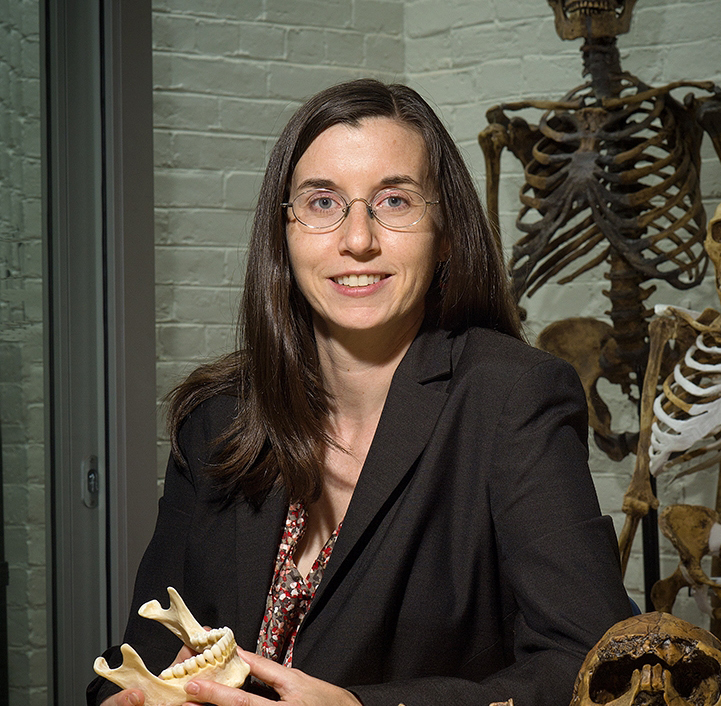
Tanya M. Smith
Associate Professor, Department of Human Evolutionary Biology, Harvard University.
Website »
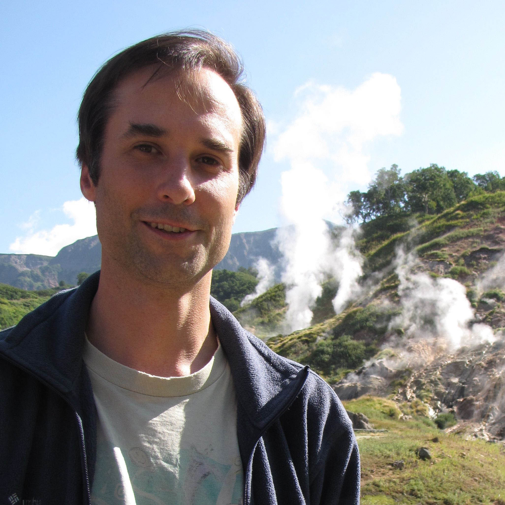
Albert S. Colman
Assistant Professor, Department of the Geophysical Sciences, University of Chicago.
Website »

Paul Tafforeau
Staff scientist, European Synchrotron Radiation Facility, Grenoble, France.
Website »
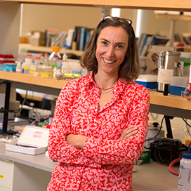
Felicitas B. Bidlack
Researcher, Forsyth Institute, Cambridge, MA.
Website »
Gregory M. Green
Doctoral candidate, Center for Astrophysics, Harvard University.
Website »
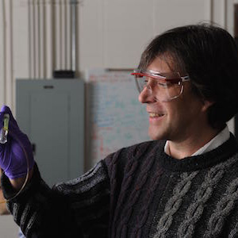
Gerry Olack
Colman laboratory director, Department of the Geophysical Sciences, University of Chicago.
Website »
Dan Lieberman
Edwin M. Lerner II Professor of Biological Sciences, Harvard University.
Website »
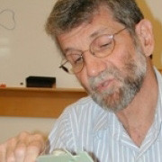
David R. Pilbeam
Henry Ford II Professor of Human Evolution, Harvard University.
Website »
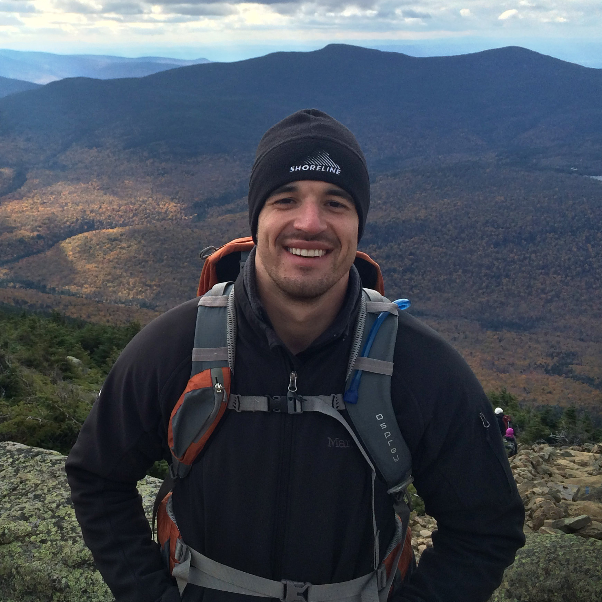
Samuel S. Urlacher
PhD, Human Evolutionary Biology, Harvard University.
Website »
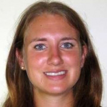
Bridget A. Alex
PhD, Human Evolutionary Biology, Harvard University.
Website »
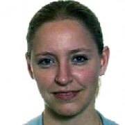
Katie Zink
Lecturer, Human Evolutionary Biology, Harvard University.
Website »
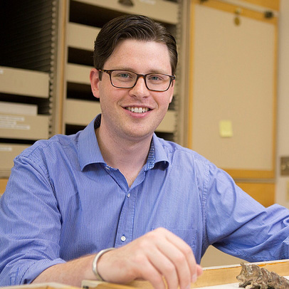
Neil Roach
Lecturer, Human Evolutionary Biology, Harvard University.
Website »
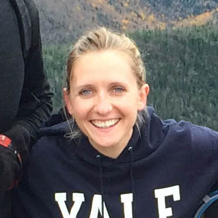
Alicia Breakey
PhD, Human Evolutionary Biology, Harvard University.
Website »
Kate Carter
PhD, Human Evolutionary Biology, Harvard University.
Website »
Eric Castillo
Doctoral candidate, Human Evolutionary Biology, Harvard University.
Website »
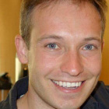
Brian Addison
PhD, Human Evolutionary Biology, Harvard University.
Website »
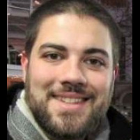
Andrew Yegian
Doctoral candidate, Human Evolutionary Biology, Harvard University.
Website »
Andy Cunningham
Doctoral candidate, Human Evolutionary Biology, Harvard University.
Website »
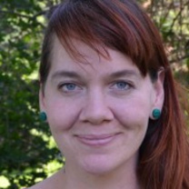
Heather Shattuck-Heidorn
Doctoral candidate, Human Evolutionary Biology, Harvard University.
Website »
Zarin Machanda
College Fellow, Human Evolutionary Biology, Harvard University.
Website »
Manvir Singh
Doctoral candidate, Human Evolutionary Biology, Harvard University.
Website »
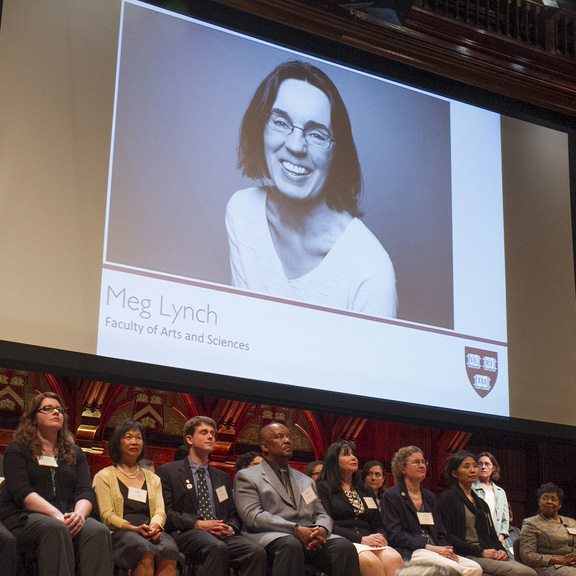
Meg Lynch
Department Administrator, Human Evolutionary Biology, Harvard University.
Website »
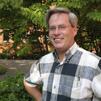
Andrew Biewener
Henry Ford II Professor of Human Evolution, Harvard University
Website »
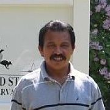
Pedro Ramirez
Animal care director, Concord Field Station, Harvard University
Website »
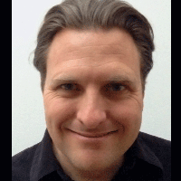
James Weaver
Staff scientist, Wyss Institute, Harvard University
Website »
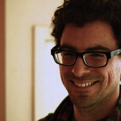
Scott A. Blumenthal
Newton International Fellow, Research Laboratory for Archaeology, University of Oxford.
Website »
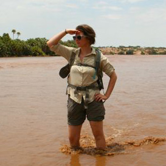
Kendra L. Chritz
Postdoctoral fellow, Biology, University of Utah.
Website »
Erik Otárola-Castillo
Faculty member, Department of Anthropology, Purdue University.
Website »
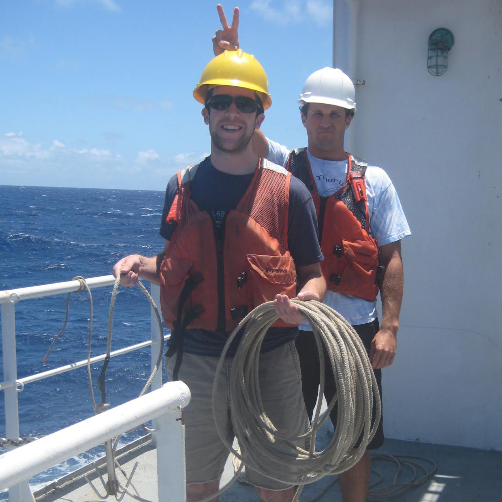
Aric Mine
Lecturer, Fresno State University.
Website »
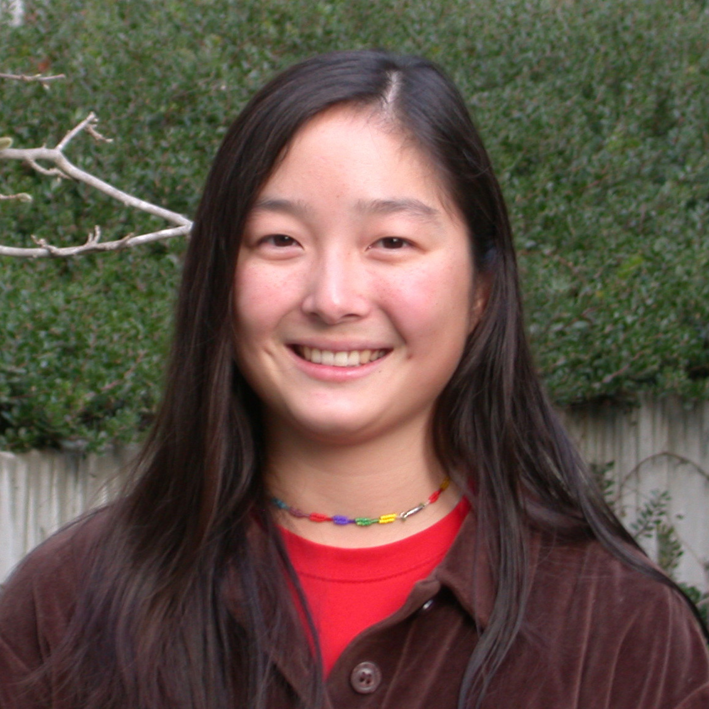
Sora Kim
Assistant Professor, Earth and Environmental Sciences, University of Kentucky.
Website »
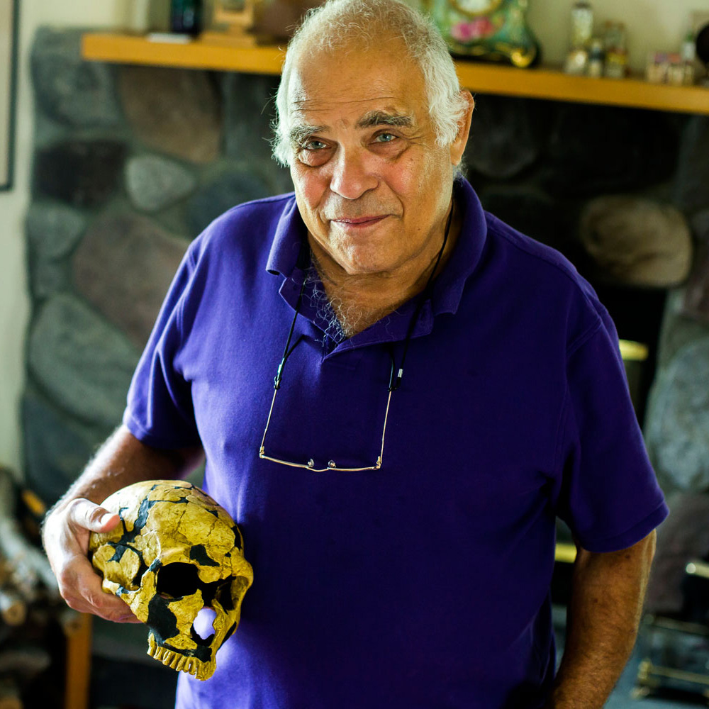
Milford Wolpoff
Professor, Department of Anthropology, University of Michigan.
Website »
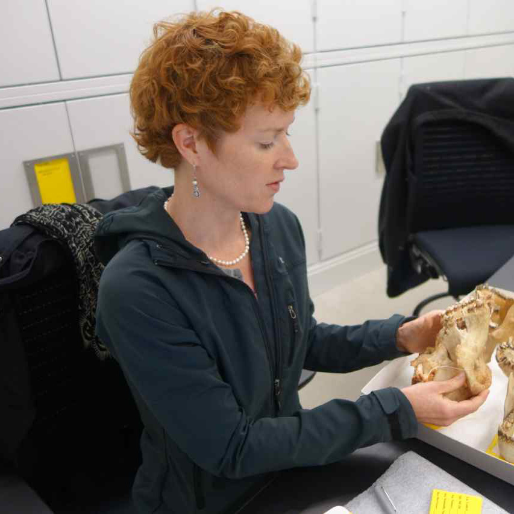
Laura MacLatchy
Professor, Department of Anthropology, University of Michigan.
Website »
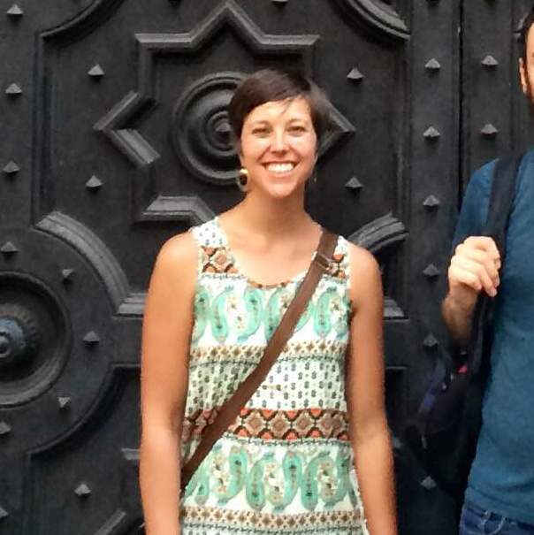
Karen Kieser
Postdoctoral fellow, Boston Children's Hospital, Harvard University.
Website »
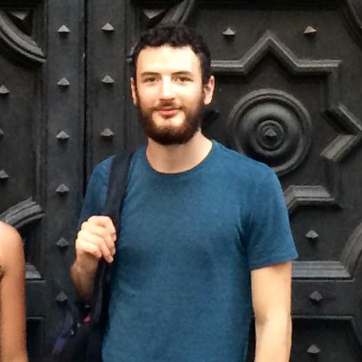
Anthony Green
Software engineer, Google, San Francisco, CA.
Website »
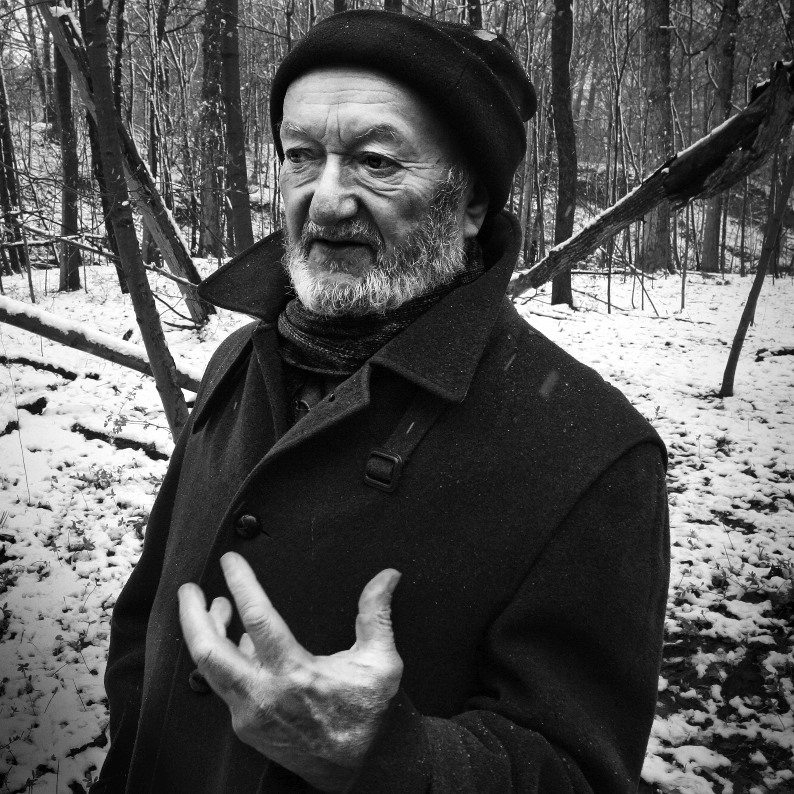
Oles Szejman
Loved cousin and resident scholar, Central Square, Cambridge.